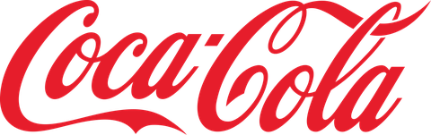
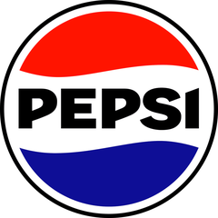
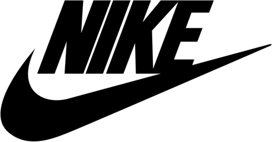
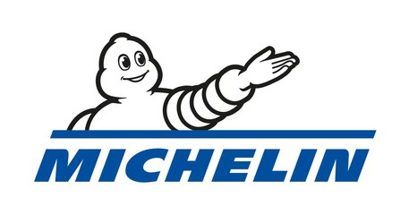
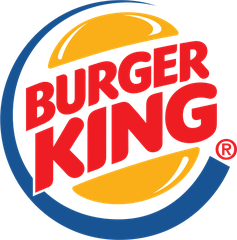
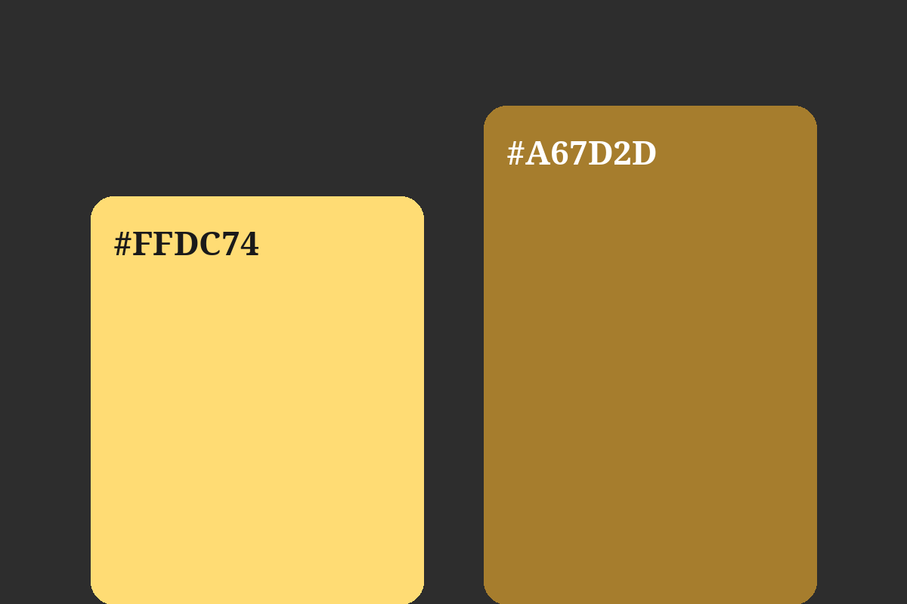
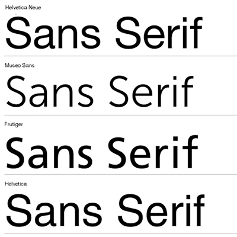
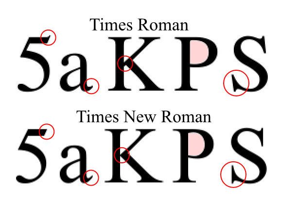
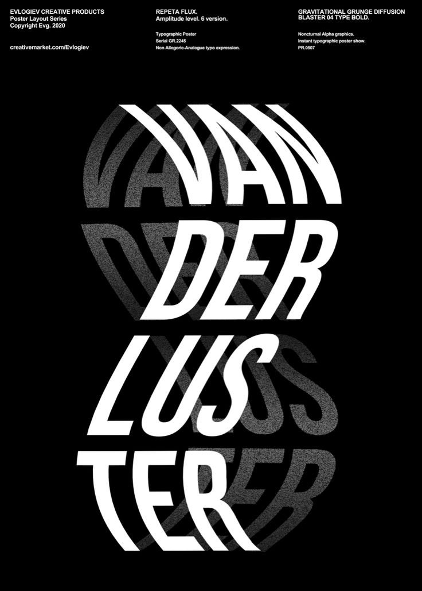

Визуалната идентичност е система от визуални елементи, които правят един бранд разпознаваем, последователен и запомнящ се.
Визуалната идентичност е система от визуални елементи, които правят един бранд разпознаваем, последователен и запомнящ се. Тя включва лого, цветове, типография, графични елементи и начина, по който се прилагат във всички точки на контакт.
Хората разпознават бранда дори без да видят името му.
Последователният визуален език изгражда професионализъм.
Отличава бранда от конкурентите на пазара.
Централният символ на бранда. Може да бъде символ, дума или комбинация.
Основни и допълнителни цветове, които носят емоция и разпознаваемост.
Система от шрифтове за заглавия, текст и акцент.
Икони, патерни, илюстрации, фотографски стил.
Как се използва идентичността върху носители – опаковки, уеб, принт.
Правила за правилно и последователно използване.
Логото може да бъде дума, знак, персонаж или комбинация от тях.
Лого, съставено само от името на бранда с характерна типография.

Монограм или инициали – подходящо при дълги имена.
Иконичен символ, който се свързва директно с бранда.
Абстрактна форма, която създава уникална асоциация.


Персонаж, който олицетворява бранда.

Комбинация от символ + текст – най-често използваният тип.

Колкото по-просто, толкова по-запомнящо се.
Трябва да се запомни лесно и да се разпознае бързо.
Да работи добре както на билборд, така и на икона на телефон.
Да изглежда добре в цвят, черно-бяло и на различни фонове.
Да отразява характера и ценностите на бранда.
Да не следва моментни модни тенденции, а да издържи във времето.
Цветът е един от най-мощните инструменти за предаване на емоция и създаването на такава.
Доверие, спокойствие, професионализъм
Енергия, страст, спешност
Природа, здраве, растеж
Оптимизъм, креативност, топлина
Елегантност, сила, лукс
Ентусиазъм, дружелюбност, енергия

Шрифтът е гласът на бранда. Той предава характер, тон и емоция още преди да прочетем текста.
Класически, елегантни, авторитетни. Подходящи за луксозни, традиционни и редакционни брандове.
Примери: Times, Garamond, Bodoni, Playfair Display

Модерни, чисти, четими. Идеални за технологични, минималистични и дигитални брандове.
Примери: Helvetica, Inter, Montserrat, Futura

Обикновено 2 шрифта са достатъчни – един за заглавия и един за текст. Максимум 3.
Използвайте различни тегла (Light, Regular, Bold) и размери, за да създадете ясна йерархия.
Текстът трябва да се чете лесно на екран и на хартия, включително в малки размери.
Шрифтът трябва да съответства на личността на бранда – сериозен, игрив, луксозен, технологичен.
